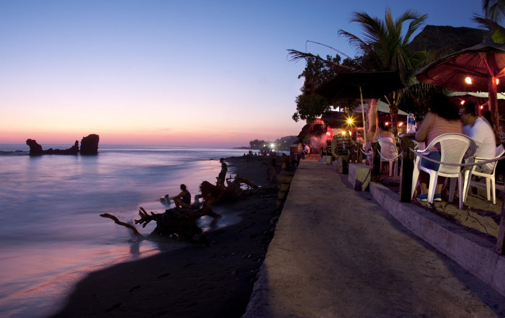
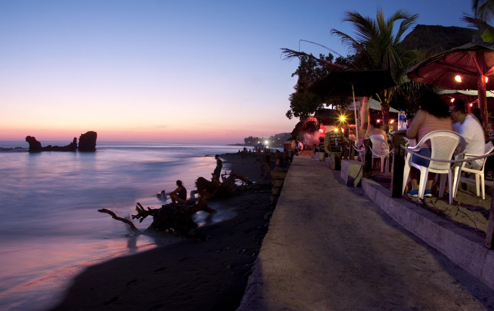

Slogan: Creando mi propio camino


 

Suchitoto
Suchitoto es un municipio del departamento de Cuscatlán, El Salvador. Su territorio ha sido habitado desde la época precolombina, y también fue el sitio donde se fundó la villa de San Salvador en 1528, que tuvo una breve existencia. A partir de la finalización de la guerra civil salvadoreña, la localidad ha prosperado hasta convertirse en uno de los más importantes sitios turísticos de este país debido a su arquitectura de estilo colonial muy bien preservado en toda la localidad con sus calles empedradas, lo cual ha permitido que se instalen hostales, restaurantes y cafés pintorescos que dan la sensación de estar en la época colonial hispánica. Según el censo oficial de 2007, tiene una población de 24.786 habitantes.
Perfil del Autor
Anastasio Mártir Aquino (Santiago Nonualco, 16 de abril de 1792-San Vicente, 24 de julio de 1833)1 fue un líder indígena salvadoreño que encabezó la insurrección de los nonualcos, un levantamiento campesino en El Salvador durante la existencia de la República Federal de Centro América. Nació en el seno de una familia que pertenecía al linaje de los taytes (caciques) de la etnia de los nonualcos, pueblo indígena que ocupa el actual territorio del departamento de La Paz.